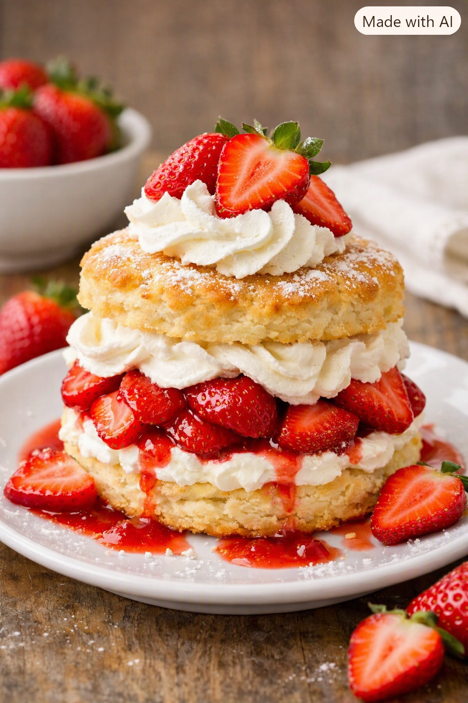

Strawberry Cheesecake
Mix crushed graham crackers with melted butter and sugar
First step: Smash 1 1/2 cup graham crackers
Now preheat oven to 325degreesF and mix crackers with 1/2 cup butter melted and 1/4 cup sugar
Now bake for 10 minutes and set aside to cool
For Topping:
Toss in strawberries, lemon juice, water, sugar and cornstarch
Cook over medium heat for 5 minutes
Ingredients:
1 1/2 cups graham crackers
1/4 cup sugar
1/2 cxup butter
3 large eggs
1 teaspoon vanilla extract
3 blockzs cream cheese
1/2 cup sour cream
2 cups srawberries

Sources & Citations